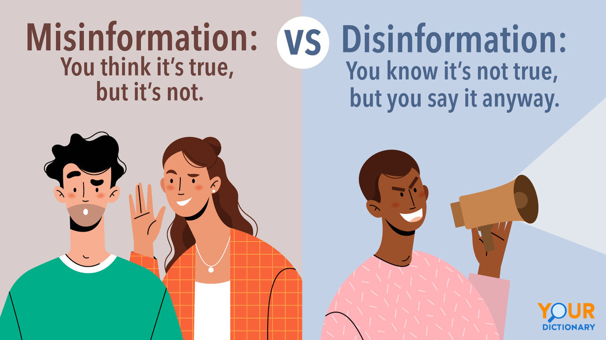

Disinformation vs Misinformation
Understanding the difference between disinformation and misinformation is crucial for identifying their unique challenges. Disinformation refers to false information spread intentionally, often with malicious intent. It’s crafted to deceive, manipulate, or disrupt. In contrast, misinformation is false information shared unintentionally, often by individuals who believe it to be true. Combatting both requires critical thinking, digital literacy, and fact-checking skills.